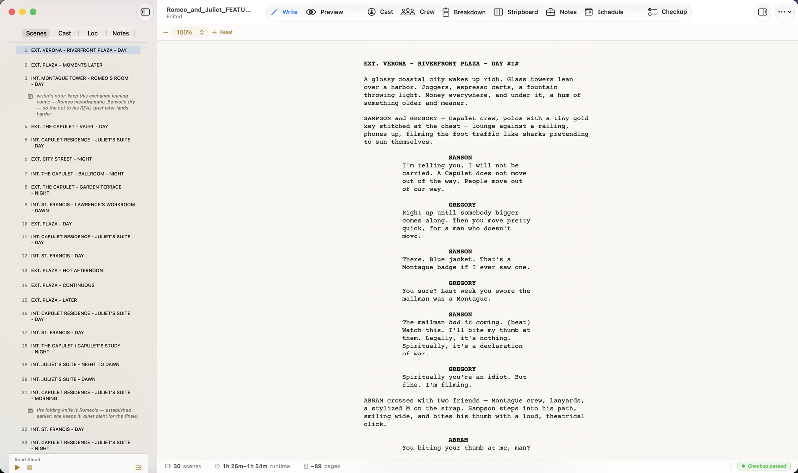
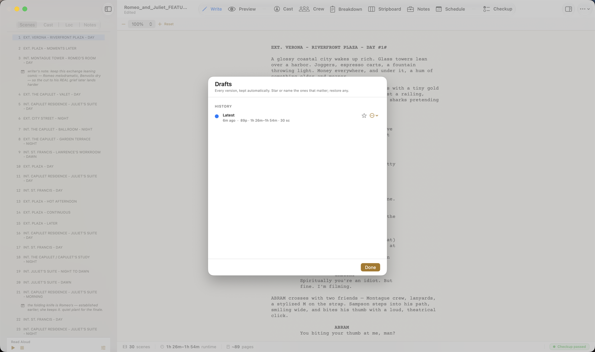
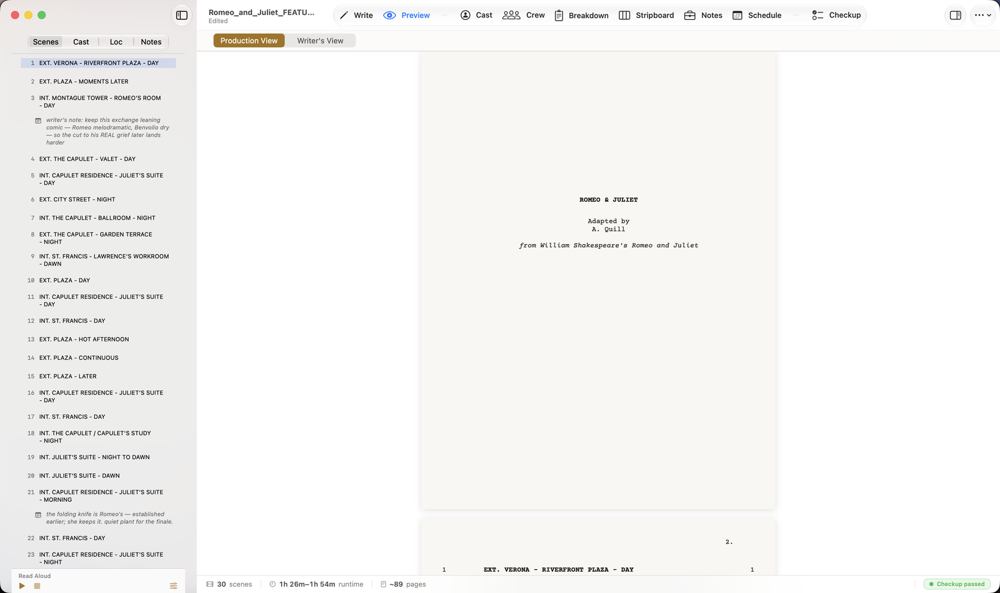
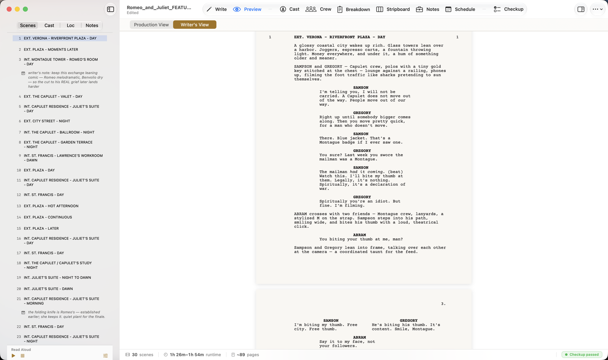

The Write tab
Press ⌘1, or click Write in the toolbar, to get to the editor. You type in a fixed-width, page-centered column that mirrors a real screenplay page — margins, the works.

You don't format manually — you write Fountain. Decoupage reads a plain-text convention called Fountain and turns it into screenplay formatting on the fly:
- Type a line in CAPS that starts with
INT.orEXT.and it becomes a scene heading. - A line in CAPS on its own becomes a character cue; the lines under it become dialogue.
- Wrap a line in parentheses for a parenthetical.
- Everything else is action.
You never leave the keyboard to style text. Two quiet conveniences help:
- Tab cycles the capitalization of a character cue, so you can fix a name fast.
- Return after a scene heading drops in the blank line automatically.
For the handful of things Fountain doesn't cover — bold, italic, centered text, a forced page break — use the Format menu (covered later in this guide).
Zoom
Above the editor is a small zoom bar: –, a percentage (100% by default), +, and Reset. It changes only how large the text appears on your screen; it never affects the printed page. ⌘–, ⌘+, and ⌘0 do the same from the keyboard.
Note. If you opened a Highland or Final Draft file as a link (rather than importing a copy), the editor is read-only — you edit those in their original app. Import an editable copy if you want to write in Decoupage. See Opening & Importing.
The vitals bar and drafts
Two things live at the edges of the window that are easy to miss and worth knowing.
The vitals bar runs along the bottom of the window, on every tab. It's your document's running scorecard: the scene count, the runtime band, the page count, and a checkup status ("Checkup passed"). It updates as you write, so the numbers you quote are always live. Click the checkup status and Decoupage jumps to the Checkup tab for the full health report — page/scene/runtime facts, cast consistency, and format checks. (Checkup gets its own section later in this guide.)
Drafts is your automatic version history. Decoupage keeps every version as you write — you don't have to save copies. Open Drafts to see them listed with the time, page count, and scene count; star or name the ones that matter ("Producer draft"), restore any version, or use Compare to put two side by side (A and B).

The idea: you should never lose work or have to think about saving. Write; Decoupage keeps the trail.
The Preview tab
Press ⌘2, or click Preview, to see your script as finished pages — correct margins, page breaks, and a page count. This is the print-accurate view.
There are two views, and the toggle at the top switches between them:
Production View is the default. It's the clean shooting draft — it hides your inline [[ notes ]] so what you see is what a reader or a crew member gets.

Writer's View shows the same pages with your inline notes included — useful while you're still working.

A couple of things to know:
- The page count shown in the toolbar always reflects the production count, even in Writer's View — so the number you quote is the real one.
- Preview opens in Production View every time you launch; switch to Writer's View when you want to see your notes.
- ✓⌘1 to write, ⌘2 to preview.
- ✓Write in plain Fountain; Decoupage formats the page.
- ✓Format menu handles bold/italic/centered/page breaks.
- ✓The vitals bar shows live counts + checkup status; Drafts keeps every version automatically.
- ✓Production View = clean shooting draft; Writer's View = with your notes.